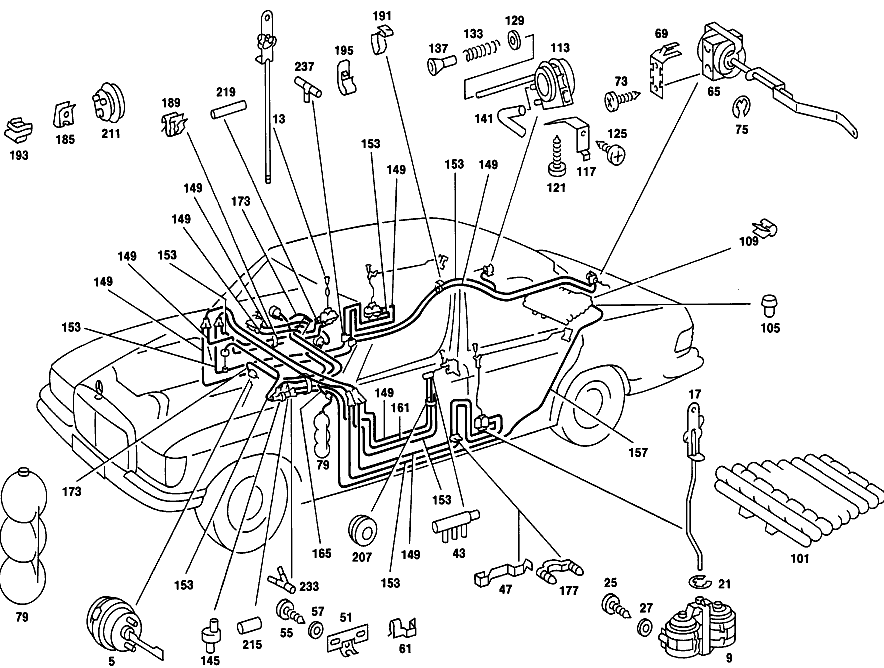

| № | Артикул | Название | Кол. | Примечание | Ограничение |
|---|---|---|---|---|---|
| 5 | A 116 800 18 75 | Исполнительный элемент | 1 | [004] FROM CHASSIS: 020 012694 024 014210 028 013904 032,033 011408 025,029 000001 | |
| 79 | A 107 800 08 19 | Бак | 1 | Рулевое управление: Вправо | |
| 79 | A 107 800 08 19 | Бак | 1 | Рулевое управление: Влево [018] UP TO CHASSIS: 020 105933 024,025 120719 028,029 047814, ALSO INSTALLED ON: 047834 032,033 083624, EXCEPT FOR: 083584 036 004661 | |
| 83 | A 123 800 11 19 | Бак | 1 | LIGHT RANGE REGULATOR SUPPLY TANK Рулевое управление: Влево [020] FROM CHASSIS: 020 105934 024,025 120720 028,029 047815, EXCEPT FOR: 047834 032,033 083625, ALSO INSTALLED ON: 083584 036 004662 | |
| 87 | A 109 805 00 98 | - Уплотнение | - | ||
| 87 | A 123 805 02 98 | - Уплотнение | 1 | [007] UP TO CHASSIS: 020 042888 024,025 043116 028,029 027096 032,033 038396 | |
| 89 | A 107 805 01 98 | - Уплотнение | 1 | [008] FROM CHASSIS: 020 042889 024,025 043117 028,029 027097 032,033 038397 | |
| 89 | A 107 805 01 98 | - Уплотнение | 1 | LIGHT RANGE REGULATOR SUPPLY TANK Рулевое управление: Влево [020] FROM CHASSIS: 020 105934 024,025 120720 028,029 047815, EXCEPT FOR: 047834 032,033 083625, ALSO INSTALLED ON: 083584 036 004662 | |
| 93 | N 007976 004205 | Шуруп | 2 | Рулевое управление: Влево [020] FROM CHASSIS: 020 105934 024,025 120720 028,029 047815, EXCEPT FOR: 047834 032,033 083625, ALSO INSTALLED ON: 083584 036 004662 | |
| 95 | N 007976 004205 | Шуруп | 2 | ||
| 97 | N 000137 005203 | Пружинная шайба | 2 | ||
| 141 | A 117 078 05 81 | Шланг | 0 | ||
| 141 | A 117 078 05 81 | Шланг | 1 | LINE FROM INTAKE MANIFOLD TO LINE для HEATING IN ENGINE COMPARTMENT,LEFT [014] UP TO CHASSIS: 020 101832 024,025 114368 028,029 046259 032,033 080465 036 004222 120 000319 | |
| 145 | A 116 800 03 78 | - Обратный клапан | 0 | ||
| 145 | A 116 800 03 78 | Обратный клапан | 1 | СИСТЕМА РЕГУЛИРОВКИ УГЛА НАКЛОНА ФАР Рулевое управление: Влево [020] FROM CHASSIS: 020 105934 024,025 120720 028,029 047815, EXCEPT FOR: 047834 032,033 083625, ALSO INSTALLED ON: 083584 036 004662 | |
| 149 | A 005 997 34 82 | Шланг | 0 | ЧЕРНЫЙ [402] БОЛЬШЕ НЕ ПОСТАВЛЯЕТСЯ [404] ЗАКАЗЫВАТЬ ПОГОННЫМИ МЕТРАМИ | |
| 153 | A 005 997 59 82 | ТРУБОПРОВОД | 0 | БЕЛЫЙ [404] ЗАКАЗЫВАТЬ ПОГОННЫМИ МЕТРАМИ | |
| 153 | A 005 997 59 82 | ТРУБОПРОВОД | 1 | CHECK VALVE AT ENGINE TO CONNECTOR AT Y\-SHAPE DISTRIBUTOR, 500 MM OR 850 MM Рулевое управление: Влево [404] ЗАКАЗЫВАТЬ ПОГОННЫМИ МЕТРАМИ [007] UP TO CHASSIS: 020 042888 024,025 043116 028,029 027096 032,033 038396 | |
| 153 | A 005 997 59 82 | ТРУБОПРОВОД | 1 | CHECK VALVE AT ENGINE TO CONNECTOR AT Y\-SHAPE DISTRIBUTOR, 930 OR 630 MM Рулевое управление: Вправо [404] ЗАКАЗЫВАТЬ ПОГОННЫМИ МЕТРАМИ [007] UP TO CHASSIS: 020 042888 024,025 043116 028,029 027096 032,033 038396 | |
| 157 | A 005 997 71 82 | ШЛАНГ | - | ||
| 157 | A 000 158 14 35 | Трубопровод | 0 | ЖЕЛТЫЙ; 4X1mm [404] ЗАКАЗЫВАТЬ ПОГОННЫМИ МЕТРАМИ | |
| 165 | A 000 997 07 52 | ШЛАНГ | - | ||
| 165 | A 000 997 65 52 | Шланг | 0 | MEDIUM GREEN/YELLOW [404] ЗАКАЗЫВАТЬ ПОГОННЫМИ МЕТРАМИ | |
| 165 | A 000 997 65 52 | Шланг | 1 | Y\-SHAPE DISTRIBUTOR IN ENGINE COMPARTMENT TO SUPPLY TANK, 850 MM OR 2200 MM [007] UP TO CHASSIS: 020 042888 024,025 043116 028,029 027096 032,033 038396 | |
| 173 | A 008 997 97 82 | ШЛАНГ | - | ||
| 173 | A 000 997 73 52 | Шланг | 0 | КРАСНЫЙ [404] ЗАКАЗЫВАТЬ ПОГОННЫМИ МЕТРАМИ | |
| 173 | A 000 997 73 52 | Шланг | 1 | LEFT VACUUM SWITCH TO RIGHT VACUUM SWITCH AT OPERATING UNIT, 120 MM [007] UP TO CHASSIS: 020 042888 024,025 043116 028,029 027096 032,033 038396 | |
| 173 | A 000 997 73 52 | Шланг | 1 | LEFT VACUUM SWITCH AT OPERATING UNIT TO ELEMENT AT WATER FAUCET, 1500 MM OR 1750 MM [007] UP TO CHASSIS: 020 042888 024,025 043116 028,029 027096 032,033 038396 | |
| 181 | A 002 988 49 78 | Скоба | 1 | Рулевое управление: Влево | |
| 181 | A 002 988 49 78 | Скоба | 1 | Рулевое управление: Вправо | |
| 199 | A 114 997 01 90 | Кабельная стяжка | 1 | 80mm | |
| 203 | A 186 997 06 81 | втулка | 1 | 28MM | |
| 203 | A 186 997 06 81 | втулка | 1 | 28MM [018] UP TO CHASSIS: 020 105933 024,025 120719 028,029 047814, ALSO INSTALLED ON: 047834 032,033 083624, EXCEPT FOR: 083584 036 004661 | |
| 211 | A 116 997 32 81 | втулка | 1 | ||
| 215 | A 007 997 61 82 | Шланг | 0 | 30mm; 9X2.75 MM [404] ЗАКАЗЫВАТЬ ПОГОННЫМИ МЕТРАМИ | |
| 215 | A 007 997 61 82 | Шланг | 1 | CHECK VALVE AT ENGINE 30mm; 9X2.75 MM [404] ЗАКАЗЫВАТЬ ПОГОННЫМИ МЕТРАМИ | |
| 215 | A 007 997 61 82 | Шланг | 2 | Y\-SHAPE DISTRIBUTOR IN ENGINE COMPARTMENT, LEFT 30mm; 9X2.75 MM [404] ЗАКАЗЫВАТЬ ПОГОННЫМИ МЕТРАМИ | |
| 215 | A 007 997 61 82 | Шланг | 1 | FROM POTENTIOMETER TO DISTRIBUTOR AT CHECK VALVE 30mm; 9X2.75 MM Рулевое управление: Влево [404] ЗАКАЗЫВАТЬ ПОГОННЫМИ МЕТРАМИ [020] FROM CHASSIS: 020 105934 024,025 120720 028,029 047815, EXCEPT FOR: 047834 032,033 083625, ALSO INSTALLED ON: 083584 036 004662 | |
| 215 | A 007 997 61 82 | Шланг | 1 | BETWEEN Y\-SHAPE DISTRIBUTOR AND LEFT LIGHTING UNIT LINE 30mm; 9X2.75 MM Рулевое управление: Влево [404] ЗАКАЗЫВАТЬ ПОГОННЫМИ МЕТРАМИ [020] FROM CHASSIS: 020 105934 024,025 120720 028,029 047815, EXCEPT FOR: 047834 032,033 083625, ALSO INSTALLED ON: 083584 036 004662 | |
| 215 | A 007 997 61 82 | Шланг | 1 | BETWEEN Y\-SHAPE DISTRIBUTOR AND RIGHT LIGHTING UNIT LINE 30mm; 9X2.75 MM Рулевое управление: Влево [404] ЗАКАЗЫВАТЬ ПОГОННЫМИ МЕТРАМИ [020] FROM CHASSIS: 020 105934 024,025 120720 028,029 047815, EXCEPT FOR: 047834 032,033 083625, ALSO INSTALLED ON: 083584 036 004662 | |
| 215 | A 007 997 61 82 | Шланг | 1 | FROM POTENTIOMETER TO LIGHTING UNIT Y\-SHAPE DISTRIBUTOR 30mm; 9X2.75 MM Рулевое управление: Влево [404] ЗАКАЗЫВАТЬ ПОГОННЫМИ МЕТРАМИ [020] FROM CHASSIS: 020 105934 024,025 120720 028,029 047815, EXCEPT FOR: 047834 032,033 083625, ALSO INSTALLED ON: 083584 036 004662 | |
| 219 | A 007 997 61 82 | Шланг | 0 | 50mm; 9X2.75 MM [404] ЗАКАЗЫВАТЬ ПОГОННЫМИ МЕТРАМИ | |
| 219 | A 007 997 61 82 | Шланг | 4 | OPERATING UNIT VACUUM SWITCH 50mm; 9X2.75 MM [404] ЗАКАЗЫВАТЬ ПОГОННЫМИ МЕТРАМИ | |
| 219 | A 007 997 61 82 | Шланг | 1 | INTAKE MANIFOLD AT ENGINE, AND AT CHECK VALVE 50mm; 9X2.75 MM [404] ЗАКАЗЫВАТЬ ПОГОННЫМИ МЕТРАМИ [009] UP TO CHASSIS: 020 053309 024,025 052650 028,029 029960 032,033 043598 036 000090 | |
| 227 | A 115 997 18 81 | КАБ. ВТУЛКА | - | Рулевое управление: Влево | |
| 227 | A 110 997 15 81 | резиновая втулка | 2 | КОРПУС ФАРЫ Рулевое управление: Влево [020] FROM CHASSIS: 020 105934 024,025 120720 028,029 047815, EXCEPT FOR: 047834 032,033 083625, ALSO INSTALLED ON: 083584 036 004662 | |
| 229 | A 115 997 19 81 | резиновая втулка | 1 | AT LINE TO VACUUM SUPPLY TANK Рулевое управление: Влево [020] FROM CHASSIS: 020 105934 024,025 120720 028,029 047815, EXCEPT FOR: 047834 032,033 083625, ALSO INSTALLED ON: 083584 036 004662 | |
| 233 | A 117 078 01 45 | Штуцер ответвления | 0 | ||
| 233 | A 117 078 01 45 | Штуцер ответвления | 1 | МОТОР. ОТСЕК СЛЕВА [014] UP TO CHASSIS: 020 101832 024,025 114368 028,029 046259 032,033 080465 036 004222 120 000319 | |
| 233 | A 117 078 01 45 | Штуцер ответвления | 1 | БЛОК\-ФАРА Рулевое управление: Влево [020] FROM CHASSIS: 020 105934 024,025 120720 028,029 047815, EXCEPT FOR: 047834 032,033 083625, ALSO INSTALLED ON: 083584 036 004662 | |
| 233 | A 117 078 01 45 | Штуцер ответвления | 1 | LIGHT RANGE REGULATOR CHECK VALVE Рулевое управление: Влево [020] FROM CHASSIS: 020 105934 024,025 120720 028,029 047815, EXCEPT FOR: 047834 032,033 083625, ALSO INSTALLED ON: 083584 036 004662 | |
| 237 | A 117 078 01 45 | Штуцер ответвления | 0 | ||
| 237 | A 117 078 01 45 | Штуцер ответвления | 1 | [015] FROM CHASSIS: 020 101833 024,025 114369 028,029 046260 032,033 080466 036 004223 120 000320 | |
| 237 | A 117 078 01 45 | Штуцер ответвления | 2 | Рулевое управление: Влево [020] FROM CHASSIS: 020 105934 024,025 120720 028,029 047815, EXCEPT FOR: 047834 032,033 083625, ALSO INSTALLED ON: 083584 036 004662 | |
| 237 | A 117 078 01 45 | Штуцер ответвления | 2 | МОТОР. ОТСЕК, СЛЕВА Рулевое управление: Влево | |
| 245 | A 000 800 04 73 | Переключатель | 1 | СИСТЕМА РЕГУЛИРОВКИ УГЛА НАКЛОНА ФАР [020] FROM CHASSIS: 020 105934 024,025 120720 028,029 047815, EXCEPT FOR: 047834 032,033 083625, ALSO INSTALLED ON: 083584 036 004662 | |
| A 116 800 17 75 | ЭЛЕМЕНТ | - | [002] FROM CHASSIS: 020 007484 024 008138 028 008305 032,033 004337 [003] UP TO CHASSIS: 020 012693 024 014209 028 013903 032,033 011407 | ||
| A 115 800 02 19 | БАЧОК | - | |||
| A 107 800 00 19 | БАЧОК | - | |||
| A 107 833 01 97 | ШЛАНГ | - | |||
| A 115 800 00 78 | КЛАПАН | - | |||
| A 107 800 07 78 | КЛАПАН | - | |||
| A 000 997 71 52 | ШЛАНГ | 0 | YELLOW\-GREEN [404] ЗАКАЗЫВАТЬ ПОГОННЫМИ МЕТРАМИ | ||
| A 000 997 70 52 | ШЛАНГ | 0 | YELLOW/RED [404] ЗАКАЗЫВАТЬ ПОГОННЫМИ МЕТРАМИ | ||
| A 000 997 68 52 | Шланг | 0 | СЕРЫЙ [404] ЗАКАЗЫВАТЬ ПОГОННЫМИ МЕТРАМИ | ||
| A 000 997 68 52 | Шланг | 1 | CHECK VALVE AT ENGINE TO CONNECTOR AT Y\-SHAPE DISTRIBUTOR, 570 MM OR 870 MM Рулевое управление: Влево [008] FROM CHASSIS: 020 042889 024,025 043117 028,029 027097 032,033 038397 | ||
| A 000 997 68 52 | Шланг | 1 | CHECK VALVE AT ENGINE TO CONNECTOR AT Y\-SHAPE DISTRIBUTOR,1080 OR 570 MM Рулевое управление: Вправо [008] FROM CHASSIS: 020 042889 024,025 043117 028,029 027097 032,033 038397 | ||
| A 000 997 72 52 | ШЛАНГ | - | |||
| A 001 997 39 52 | Шланг | 0 | GREY/YELLOW [404] ЗАКАЗЫВАТЬ ПОГОННЫМИ МЕТРАМИ | ||
| A 011 997 39 82 | ШЛАНГ | - | |||
| A 000 997 66 52 | ШЛАНГ | 0 | GREY/LIGHT BLUE [404] ЗАКАЗЫВАТЬ ПОГОННЫМИ МЕТРАМИ | ||
| A 000 997 66 52 | ШЛАНГ | 1 | Y\-SHAPE DISTRIBUTOR IN ENGINE COMPARTMENT TO SUPPLY TANK, 850 MM OR 2200 MM [008] FROM CHASSIS: 020 042889 024,025 043117 028,029 027097 032,033 038397 | ||
| A 011 997 40 82 | ШЛАНГ | 1 | MEDIUM GREEN\-RED, 1100 MM [007] UP TO CHASSIS: 020 042888 024,025 043116 028,029 027096 032,033 038396 [404] ЗАКАЗЫВАТЬ ПОГОННЫМИ МЕТРАМИ | ||
| A 000 997 74 52 | ШЛАНГ | 1 | DARK RED/GREEN 1200 MM [008] FROM CHASSIS: 020 042889 024,025 043117 028,029 027097 032,033 038397 | ||
| A 000 997 65 52 | Шланг | 0 | MEDIUM GREEN/LIGHT BLUE [404] ЗАКАЗЫВАТЬ ПОГОННЫМИ МЕТРАМИ | ||
| A 000 997 64 52 | Шланг | 0 | MEDIUM GREEN/ORANGE [404] ЗАКАЗЫВАТЬ ПОГОННЫМИ МЕТРАМИ | ||
| A 000 997 73 52 | Шланг | 0 | ТЕМНО\-КРАСНЫЙ [404] ЗАКАЗЫВАТЬ ПОГОННЫМИ МЕТРАМИ | ||
| A 000 997 73 52 | Шланг | 1 | LEFT VACUUM SWITCH TO RIGHT VACUUM SWITCH AT OPERATING UNIT, 150 MM [008] FROM CHASSIS: 020 042889 024,025 043117 028,029 027097 032,033 038397 | ||
| A 000 997 73 52 | Шланг | 1 | LEFT VACUUM SWITCH AT OPERATING UNIT TO ELEMENT AT WATER FAUCET, 1600 MM OR 1800 MM [008] FROM CHASSIS: 020 042889 024,025 043117 028,029 027097 032,033 038397 | ||
| A 002 997 07 90 | СОЕДИНИТЕЛЬНЫЙ ЭЛЕМЕНТ | - | Рулевое управление: Вправо | ||
| A 001 997 41 90 | Кабельная стяжка | 1 | 7X100 MM | ||
| A 100 995 00 01 | ХОМУТ | - | Рулевое управление: Вправо | ||
| A 116 995 00 01 | хомут | 1 | Рулевое управление: Вправо | ||
| A 110 995 00 65 | хомут | - | |||
| A 000 476 04 36 | Держатель шланга | 1 | [017] FROM CHASSIS: 024,025 078439 | ||
| A 000 995 17 65 | хомут | 1 | [017] FROM CHASSIS: 024,025 078439 | ||
| N 007976 005202 | Шуруп | 1 | Рулевое управление: Вправо | ||
| A 007 997 61 82 | Шланг | 0 | 90mm; 9X2.75 MM [404] ЗАКАЗЫВАТЬ ПОГОННЫМИ МЕТРАМИ | ||
| A 007 997 61 82 | Шланг | 0 | 150mm; 9X2.75 MM [404] ЗАКАЗЫВАТЬ ПОГОННЫМИ МЕТРАМИ | ||
| A 007 997 61 82 | Шланг | 2 | OPERATING UNIT VACUUM SWITCH 150mm; 9X2.75 MM [404] ЗАКАЗЫВАТЬ ПОГОННЫМИ МЕТРАМИ [007] UP TO CHASSIS: 020 042888 024,025 043116 028,029 027096 032,033 038396 | ||
| A 001 997 85 52 | ШЛАНГ | 0 | ФИОЛЕТОВЫЙ [404] ЗАКАЗЫВАТЬ ПОГОННЫМИ МЕТРАМИ | ||
| A 001 997 85 52 | ШЛАНГ | 1 | FROM POTENTIOMETER TO DISTRIBUTOR AT CHECK VALVE,800 MM Рулевое управление: Влево [020] FROM CHASSIS: 020 105934 024,025 120720 028,029 047815, EXCEPT FOR: 047834 032,033 083625, ALSO INSTALLED ON: 083584 036 004662 | ||
| A 001 997 86 52 | ШЛАНГ | 0 | VIOLET/GREY [404] ЗАКАЗЫВАТЬ ПОГОННЫМИ МЕТРАМИ | ||
| A 001 997 86 52 | ШЛАНГ | 1 | 900mm Рулевое управление: Влево [020] FROM CHASSIS: 020 105934 024,025 120720 028,029 047815, EXCEPT FOR: 047834 032,033 083625, ALSO INSTALLED ON: 083584 036 004662 | ||
| A 001 997 87 52 | ШЛАНГ | 0 | VIOLET\-YELLOW [404] ЗАКАЗЫВАТЬ ПОГОННЫМИ МЕТРАМИ | ||
| A 001 997 87 52 | ШЛАНГ | 1 | FROM Y\-SHAPE DISTRIBUTOR TO LEFT LIGHTING UNIT,990 MM Рулевое управление: Влево [020] FROM CHASSIS: 020 105934 024,025 120720 028,029 047815, EXCEPT FOR: 047834 032,033 083625, ALSO INSTALLED ON: 083584 036 004662 | ||
| A 001 997 87 52 | ШЛАНГ | 1 | FROM Y\-SHAPE DISTRIBUTOR TO RIGHT LIGHTING UNIT,2550 MM Рулевое управление: Влево [020] FROM CHASSIS: 020 105934 024,025 120720 028,029 047815, EXCEPT FOR: 047834 032,033 083625, ALSO INSTALLED ON: 083584 036 004662 | ||
| A 001 997 87 52 | ШЛАНГ | 1 | FROM POTENTIOMETER TO LIGHTING UNIT Y\- SHAPE DISTRIBUTOR,820 MM Рулевое управление: Влево [020] FROM CHASSIS: 020 105934 024,025 120720 028,029 047815, EXCEPT FOR: 047834 032,033 083625, ALSO INSTALLED ON: 083584 036 004662 | ||
| A 002 997 48 90 | Проставка | 1 | 6,0/10,0MM Рулевое управление: Вправо | ||
| A 002 997 48 90 | Проставка | 1 | ДВИГ.К РАСПРЕДЕЛ.,МОТОР.ОТСЕК; 6,0/10,0MM Рулевое управление: Вправо | ||
| A 115 805 03 22 | РАСПРЕДЕЛИТЕЛЬ | - | |||
| A 115 805 04 22 | РАСПРЕДЕЛИТЕЛЬ | - | [415] ПРИМЕЧ. ПО ЗАМЕНЕ ПРИМЕНИМО ТОЛЬКО ДЛЯ СТОЯЩИХ РЯДОМ ПОЗИЦИЙ | ||
| A 123 805 00 22 | Распределитель | - | |||
| A 000 800 07 73 | ВЫКЛЮЧАТЕЛЬ | - | |||
| A 000 800 04 73 | Переключатель | 1 | СИСТЕМА РЕГУЛИРОВКИ УГЛА НАКЛОНА ФАР [020] FROM CHASSIS: 020 105934 024,025 120720 028,029 047815, EXCEPT FOR: 047834 032,033 083625, ALSO INSTALLED ON: 083584 036 004662 |
Позиций: 105 · подписано на схемах: 56 · колесо — плавный зум в курсор, перетаскивание — пан, двойной клик — зум, клик по артикулу — скопировать · наведите на строку или цифру на схеме — подсветка связки, клик — закрепить.